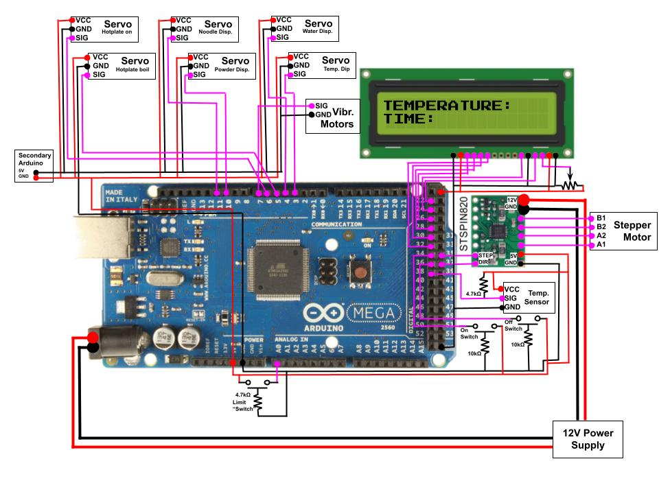

Electrical Breakdown
Our electrical system involves two power sources: a single Arduino Mega, a secondary Arduino Uno for extra power, one STSPIN820 stepper motor driver, one stepper motor, six servo motors, two vibration motors, one LCD display, a temperature sensing probe, the COTS Hotplate PCB, and multiple buttons.
Arduino Mega
Arduino Mega
We moved to an Arduino Mega in order to have enough pins for all of our operations.
Secondary Arduino
For this arduino, we only used the 5V and Ground pins. These were plugged into our breadboard and used to power the 5v and ground portions of some of the servo motors.
Servo Motors
We connected the servo motors to PWM pins on our Arduino Mega.
Stepper Motors and Drivers
We used an STSPIN820 stepper motor driver to control our stepper motor. This driver was connected to a 12V power supply. We set the motor drivers to have an output current of around 1.5A, to power the steppers without frying any boards or chips.
User Interface - LCD Screen and buttons
Our user interface uses a 16x2 character LCD screen and two buttons. The screen displays information from our temperature sensor and how much time until the next action, and the buttons work as start and emergency stop buttons.
COTS Hotplate PCB
Our induction hotplate is controlled by multiple capacitive touch buttons. To interact with the hotplate, we unscrewed the PCB from its location in the hotplate and moved it closer to the electrical box. To trigger the buttons, we contact them with a large screw on a servo, as that simulates the capacitive touch of a person.
Temperature Sensing Probe
To measure the temperature of the boiling water, we used the DS18B20 Waterproof Temperature Sensor, and dipped it in and out of the water with a servo.
Vibration Motors
To shake the powder in the hopper we used a pack of OSSEP Vibration motors.